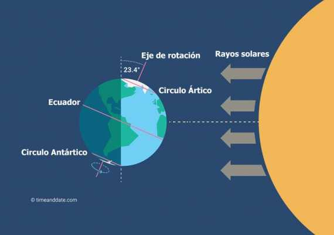

En invierno, la Tierra da un paseo más lejos del sol. Esto significa que la luz del sol llega menos directamente a donde vivimos. Como el sol nos da calor, cuando está más lejos, hace menos calor en la Tierra. Además, durante el invierno, algunos lugares reciben menos horas de luz solar cada día. Esto hace que las cosas se enfríen más porque no tienen tanto tiempo para calentarse con el sol. Por eso, en invierno hace frío: porque estamos más lejos del sol y recibimos menos luz solar directa.
